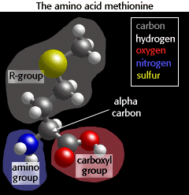

Using Computers to Study Molecular Structure
Amino Acids
About amino acids
Proteins are composed of 20 different amino acids. In this section of the activity, you'll view and manipulate a variety of amino acids in MacMolecule.  Each type of atom in a MacMolecule molecule is a different color. Note the color scheme in the graphic to the right.For each amino acid you view, identify the alpha carbon, the alpha amino group, and the carboxyl group. Identify also the "R-group", the side chain that is distinct for each of the 20 amino acids.
Opening amino acid files in MacMolecule
When you choose an amino acid from the list below, MacMolecule will automatically open that amino acid file. You can switch back to Netscape by choosing Netscape from the Applications Menu.
Amino Acid MacMolecule Files tryptophan asparagine aspartic acid glycine valine serine methionine histidine
Questions
1. The alpha carbon of amino acids has covalent bonds to _____ other atoms, but the carboxyl carbon atom has covalent bonds to _____ other atoms. 2. Amino acids are classified as hydrophilic (water-loving) if they have lots of electronegative atoms (oxygen (red) or nitrogen (blue)) in their R groups. Amino acids are classified as hydrophobic (water-fearing) if their R groups contain predominantly hydrogen (white) and carbon (gray). Examine the structures of the amino acids listed above. On your worksheet, mark which are mostly hydrophilic and which are mostly hydrophobic.


University of Arizona
Wednesday, September 9, 1998
Contact the Development Team
http://www.biology.arizona.edu
All contents copyright © 1998. All rights reserved.